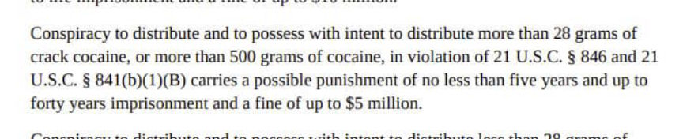
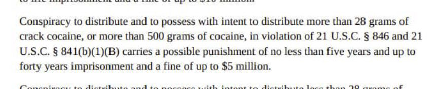

No Prison for Woman Who Received Four Kilos of Cocaine
~1 min read | Published on 2022-05-29, tagged Drugs, General-News using 171 words.
U.S. Senior District Court Judge Douglas P. Woodlock sentenced Michel Saredi-Munoz Moronta, 22, to time served (roughly 21 months) and four years of supervised release for her role in a drug trafficking conspiracy.
In August 2020, law enforcement officers identified several USPS Priority Mail envelopes that contained cocaine. When law enforcement officers conducted surveillance at the delivery addresses in Lawrence, they saw a woman, later identified as Munoz Moronta, get out of her car and take possession of the packages. Police arrested her after she had collected all of the suspicious packages.
The packages contained a total of four kilograms of cocaine.

In December 2021, the defendant “pleaded guilty to one count of conspiracy to distribute and to possess with intent to distribute 500 grams or more of cocaine.”
This fairly straightforward case involved the Federal Bureau of Investigation, U.S. Postal Inspection Service, and the Lawrence Police Department. United States Attorney Rachael S. Rollins’ Narcotics & Money Laundering Unit prosecuted the case.
In August 2020, law enforcement officers identified several USPS Priority Mail envelopes that contained cocaine. When law enforcement officers conducted surveillance at the delivery addresses in Lawrence, they saw a woman, later identified as Munoz Moronta, get out of her car and take possession of the packages. Police arrested her after she had collected all of the suspicious packages.
The packages contained a total of four kilograms of cocaine.

Cocaine trafficking sentences often involve incarceration.
In December 2021, the defendant “pleaded guilty to one count of conspiracy to distribute and to possess with intent to distribute 500 grams or more of cocaine.”
This fairly straightforward case involved the Federal Bureau of Investigation, U.S. Postal Inspection Service, and the Lawrence Police Department. United States Attorney Rachael S. Rollins’ Narcotics & Money Laundering Unit prosecuted the case.
United States Attorney Rachael S. Rollins announced the sentence.